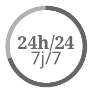

L'information en continu

Définition:
L'information en continu est la fourniture constante d'actualités par des médias,
qu'il s'agisse des radios, des chaînes de télévision, des affichages ou des bandeaux,
ainsi que par leurs équivalents sur Internet. Ceux-ci peuvent diffuser des informations générales ou spécialisées
dans des domaines tels que l'information financière et économique, la circulation routière, la prévision météorologique.
Quelque exemple de moyen de diffusion
-les sites de retransmission de radio en direct
-la télévision via un navigateur
-etc...
Exemples de site d'information en continu
Des sites comme Google news proposent ce genre de services;
mais plein d'autres sites tel que des sites de presses proposent aussi ces informations.
Sites d'information en continu :
-20minutes
-Le Point
-BFMTV
-LCI
En bref, le WEB nous permet de nous informer au fur et a mesure que les
évènements se passent.
menu principal